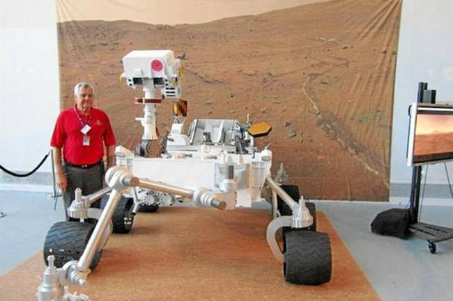
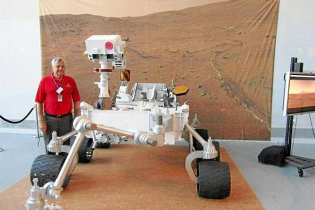

Robot de exploración llega a Marte
La NASA ha enviado un robot de exploración a Marte para recolectar muestras y analizar la superficie del planeta.
Leer más
La NASA ha enviado un robot de exploración a Marte para recolectar muestras y analizar la superficie del planeta.
Una empresa ha lanzado un robot de limpieza autónomo que utiliza inteligencia artificial para limpiar y mantener grandes espacios.
Los robots colaborativos son cada vez más populares en la industria, permitiendo que humanos y robots trabajen juntos de manera segura y eficiente.
Los robots asistenciales están siendo cada vez más utilizados en la atención médica, ayudando a los pacientes y al personal médico en tareas como la movilidad y el monitoreo.